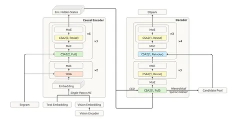

Разберём технический отчёт DeepSeek-V4.1-Flash. В первой части обсудим архитектуру модели. Главное достижение авторов — экстремальное сжатие KV-кеша. При стандартном для frontier-моделей максимальном контексте в миллион токенов глобальный KV-кеш на один токен составляет 890 байт, что делает инференс даже максимального числа токенов почти бесплатным (менее одного гигабайта в сумме).
В архитектуре DeepSeek-V4.1-Flash каузальные энкодер и декодер, у каждого по 20 слоёв. Энкодер-декодер-архитектура выбрана не случайно: это помогает экономить вычисления. Нижняя половина слоёв формирует глубокое представление префикса, на которое затем аттендится декодер. В случае короткого промпта это позволяет в среднем в два раза сократить стоимость вычислений.
DeepSeek-V4.1-Flash — MoE-модель на 552 миллиарда параметров, плюс 196 миллиардов в Engram. На префилле активируются 8 миллиардов параметров, а на декоде — 16 миллиардов. Размер скрытого представления — 5120; количество аттеншн-голов — 64. Есть sliding window attention, один shared-эксперт и 384 маршрутизируемых. На один токен активируются шесть экспертов.
Кроме того, с самого начала обучения использовались изображения, так что модель — нативно мультимодальная. Изображение проходит через DeepSeek-ViT (32 слоя, 2D-RoPE), далее применяется pixel unshuffle 3х3, MLP-проектор, и всё это перегоняется в текстовый эмбеддинг. Вместо привычной свёртки для отображения пикселей в токены применяется линейный слой, что даёт возможность использовать Muon.
Как работает каждый из компонентов. На префилле энкодер делает полный проход по префиксу. На декоде глобальный KV-кеш проецируется из скрытого представления последнего, двадцатого слоя энкодера. Хидден подаётся не напрямую, а отображается layer-specific-проекциями. Это позволяет экономить на кеше в декодере.
Ещё одна важная особенность модели — Compressed Sparse Attention 2 (CSA2) в нескольких режимах, против CSA и Heavily Compressed Attention (HSA) в базовой DeepSeek-V4-Flash. О том, что такое CSA и HSA, мы писали вот тут, а в этом разборе сосредоточимся на режимах CSA2. Всего их три:
— Full Mode — вычисляем полный KV-кеш и делаем полный аттеншн, но оставляем возможность определять важные и неважные токены, имея некие индексы. На части хороших кандидатов аттендимся сразу, а часть — 16 тысяч — передаём дальше.
— Reindex Mode — аттендимся на KV-кеш из Full Mode, выбираем из переданного пула хороших токенов своих кандидатов.
— Reuse Mode — переиспользуем Top-K-индексы от Full Mode. Самый частый блок: 15 из 20 и на префилле, и на декоде.
Во второй части продолжим разговор об архитектуре, а также затронем претрейн и посттрейн.
Разбор подготовил
Душный NLP
